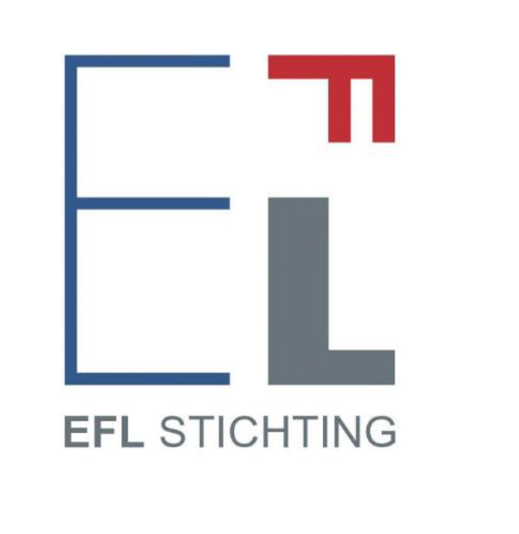

Breathable Futures
Air, Art, Media, Method
Project by Lucy Sabin 2025-26
Funded by Van Eesteren-Fluck & Van Lohuizen (EFL) Foundation, Amsterdam
Project Summary
Breathable Futures (2025-26) was a project to develop and complete a book manuscript. The resulting manuscript proposes an interdisciplinary account of air pollution and atmospheric justice through the methodological and conceptual framework of Aerography (from Greek aēr 'air' + -graphia 'writing'). It explores artistic research, participatory arts, exhibition design and art–science collaboration, highlighting how these practices attend to the embodied, cultural, social and political dimensions of atmospheric experience. The resulting publication is intended for a readership across the arts, humanities and social sciences, with relevance to researchers, students, creative practitioners and decision-makers concerned with air pollution, environmental justice and the politics of knowledge. The full manuscript is now under review with an open-access university press.
A chapter from the book will be presented at the NICHE Centre for Environmental Humanities on March 7, 2027. Further updates to follow. The author is grateful to the Van Eesteren-Fluck & Van Lohuizen (EFL) Foundation for supporting this project.
